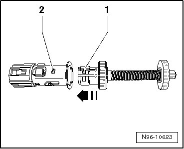
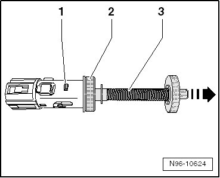
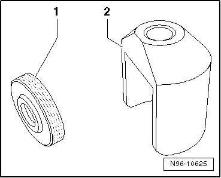
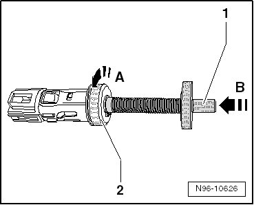
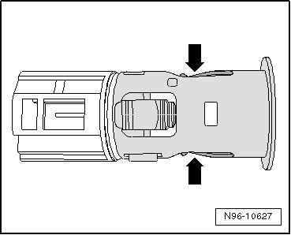

Cigarette Lighter Socket
Cigarette Lighter Socket
• The procedure for removing and installing is the same for all power sockets and is only described for the cigarette lighter socket.
CAUTION!
Using force to remove cigarette lighter sockets without illumination can result in damage to the mounting sleeve retainers.
The puller T40148 can only be used to remove cigarette lighter sockets with illumination.
The puller is not capable of releasing the retainers on power sockets without illumination.
Power sockets without illumination usually cannot be removed without damage.
Special tools, testers and auxiliary items required
• Puller (T 40148)
Removing
- Remove cigarette lighter insert or blank plug from receptacle.
• The illustration shows the socket removed.
CAUTION!
The outlet or mounting sleeve can be damaged.
Make sure the puller is seated properly or the mounting sleeve retainers will not release.
- Insert puller - arrow - in receptacle so retainers - 1 - engage in recesses - 2 -.

- Release the mounting sleeve retainers by pulling on grip piece - 3 - in direction of - arrow -.

- Pull receptacle with puller out of mounting sleeve.
CAUTION!
The outlet electrical wiring can be damaged.
Note the lengths of the electrical wires when removing the outlet.
Depending on installation location, it is recommended to use press 40148/1 - 2 - with knurled wheel - 1 -.

CAUTION!
Make sure none of the surrounding components are damaged when using the press.
- Disconnect electrical connection.
• There are different versions of the power outlet and cigarette lighter outlet due to different mounting locations and construction. The differences are primarily In the length and type of electrical connectors. On power outlets and cigarette lighters with an electrical cable pig tail, additional work may be necessary to access the connector.
- Release puller retainers by pressing spindle - 1 - in direction of - arrow B -. Then release press - 2 - by turning slightly to left - arrow A -. Remove the puller from the outlet.

• Make sure the puller retainers are not spread.
CAUTION!
The cigarette lighter could be ejected from the socket when the heating cycle is complete.
Inserting the puller into the socket spreads the socket retainer springs and reduces their ability to retain the cigarette lighter insert.
After removing the socket, bend the retainer springs together carefully to tighten them and make sure the insert remains in the socket when the heating cycle is complete.
- Carefully bend retainer springs together - arrows -.

- Make sure the cigarette lighter insert is not ejected completely into vehicle interior on completion of glow cycle, and remains in receptacle.
Installing
Install in reverse order of removal.